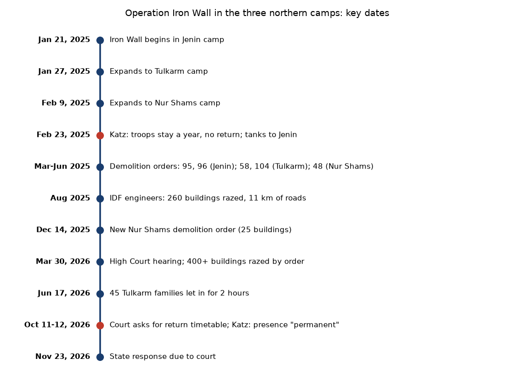
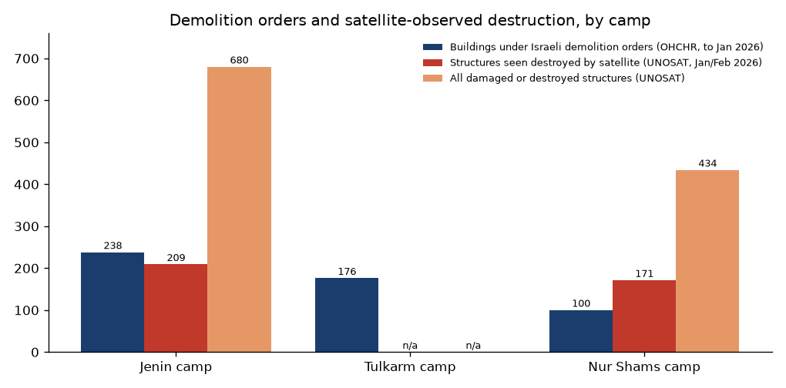
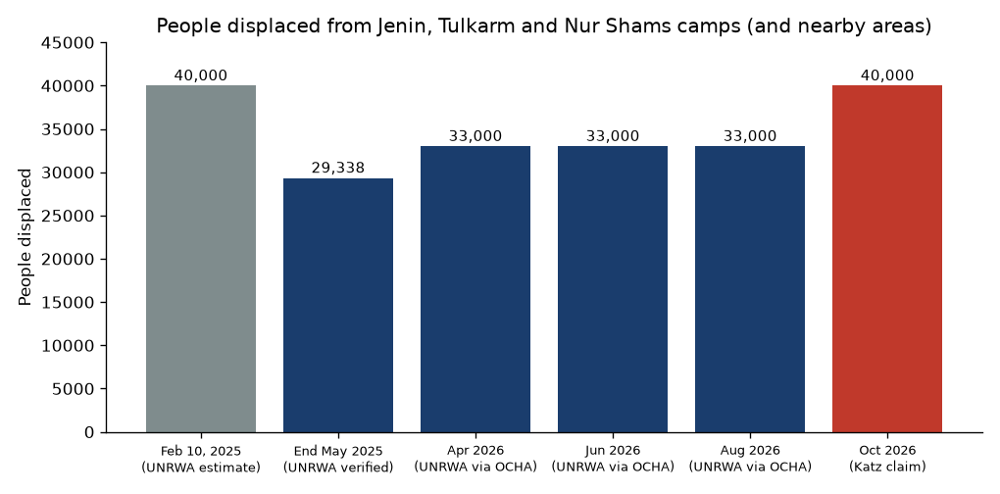

Emptying the northern camps: Israel's Operation Iron Wall in Jenin, Tulkarm and Nur Shams, January 2025 to November 2026
Prepared November 4, 2026 (Israel time, UTC+2). This backgrounder covers the Israeli operation itself: what Israel said it would do, what it did, whether it worked, how many people were displaced, and where they went. It does not cover living conditions of the displaced. Claims are labeled by who makes them. Items marked unconfirmed rest on one source or could not be checked. Numbers in square brackets refer to the Sources list.
Key points
Stated aim: Israel's leaders replaced short raids with a lasting troop presence inside the camps. In February 2025 Defense Minister Israel Katz ordered the army to stay "for the coming year" and not let residents return; in October 2026 he called the presence "permanent" [3][4][5].
Implementation: Troops took the three camps within about three weeks, still hold them, and have cut wide roads through them. More than 400 buildings were razed by military order as of March 2026, on top of battle damage; satellite images show about half of the structures in Jenin and Nur Shams camps damaged or destroyed [6][8][9].
Success, as Israel measures it: The army reports a 78% drop in West Bank attacks in 2025 and no organized armed activity left in the camps. Critics say the threat was already mostly contained and the scale goes beyond security needs [10][11][12].
Displacement: About 40,000 people at the peak (February 2025); about 33,000 still out as of October 2026, per the UN agency for Palestinian refugees (UNRWA). Almost none have been allowed back [2][13][14].
Where they went: Mostly nearby: Jenin city, Burqin and other Jenin-area villages; Tulkarm city and its eastern suburbs (Dhinnaba, Iktaba, Shuweika) and towns such as Anabta and Bal'a. Over half rent, about 30% live with relatives, about 20% are in shelters [13][15][16].

Key dates. Our graphic. Data: OHCHR thematic report (Sept. 4, 2026), OCHA, Ynet, Jerusalem Post, Middle East Eye [1][3][6][7][17].
Background in brief
Jenin, Tulkarm and Nur Shams are refugee camps: dense neighborhoods built for Palestinians who left or fled their homes in 1948, and their descendants, run with services from UNRWA. Since 2021 they were bases for local armed groups such as the "Jenin Battalion" (Katibat Jenin, mostly Palestinian Islamic Jihad) and the "Tulkarm Battalion" (mostly local Fatah-linked fighters) [11]. In December 2024 and January 2025 the Palestinian Authority (PA) itself besieged Jenin camp to disarm these groups. On January 21, 2025, two days after the Gaza ceasefire started, Israel launched Operation Iron Wall in Jenin camp. It reached Tulkarm camp on January 27 and Nur Shams camp on February 9 [1].
1. What Israel has said
Before the operation (Sept. 2024): Then-Defense Minister Yoav Gallant said the army had been "mowing the lawn" but would need to "pull out the roots." Katz, then foreign minister, called for dealing with Jenin and Tulkarm "exactly" as in Gaza, including "temporary evacuation" of residents [11].
Jan. 2025: Smotrich announced that security in the West Bank had been added as an official war goal [11]. Katz said Israel would apply the "lesson" of Gaza's repeated raids to Jenin camp [18].
Feb. 23, 2025: Katz said he had instructed the army to prepare for a "long stay" in the emptied camps for the coming year and that residents would not be allowed to return. He said about 40,000 people had left and that UNRWA's work in the camps had stopped. The same day, three tanks entered Jenin, the first in the West Bank since 2002 [3][19].
Smotrich (early 2025): quoted as saying "Tulkarem and Jenin will look like Jabalia and Shujayea" (two badly destroyed areas of Gaza) and that West Bank areas would "be turned into uninhabitable ruins, and their residents will be forced to migrate and seek a new life in other countries" [18]. The exact date and full context of this quote are unconfirmed.
2025 (exact date unconfirmed): Katz said troops would stay in the camps "at least until the end of the year" [25].
Redesigning the camps (March 2025): Ynet reported a Central Command plan to bar rebuilding on demolished lots, so the camps turn "from a fortified target into a neighborhood of the city." It named a "consciousness" goal: "blurring" the refugee narrative that the camps keep alive. Similar plans were drawn up for all 18 West Bank camps, held "for the day of command" [7].
Aug. 2025: Central Command's chief engineer, Col. A., said: "We called it 'turning the refugee camps into a living neighborhood'... When we finish, they won't be able to build... The intention is for the area to stay like this." He said the PA was told Israel "did not come to erase the camp" and that residents could return later, by a political decision [6].
In court (Feb. 2026): The state told the High Court that the army had not ordered residents to leave and that most left before the operation. This conflicts with residents' accounts and the UN human rights office's finding that troops ordered people out [1]; it is disputed. The state said residents could not return except for limited, coordinated visits [5].
Oct. 12, 2026: After the High Court asked for a return timetable, Katz said: "I do not intend to compromise on this matter, even if it requires special legislative procedures in the Knesset," and called the presence "permanent." Smotrich urged Netanyahu and Katz to tell the army not to cooperate with the court [4][5][20].
Next camps: In 2026 Katz ordered the army to prepare to take another camp on the same model; Balata (Nablus) is the leading option, with Qalandiya and Jalazone also planned. As of Ynet's report, the army had shelved it for lack of troops [21].
Prime Minister Netanyahu has spoken mainly in general terms. Katz says the shift from raids to permanent presence was a doctrine he and Netanyahu set together [20]. We found no formal government decision to abolish the camps or end refugee status; the "end the refugee narrative" goal appears in army briefings reported by Ynet, not in a published policy [7].
2. Implementation
Takeover: The army needed about two weeks to secure Jenin camp, though some officials first said the operation would take days [10]. By Feb. 6, 2025, about 90% of Jenin camp and Tulkarm camp residents were out; Nur Shams was almost empty by Feb. 11 [1].
Forces: Three tanks went to Jenin on Feb. 23, 2025, and three more battalions were added in the West Bank [3][11]. The tanks later left as units moved to Gaza [22] (date unconfirmed). The army keeps a standing force inside or around each camp.
Demolitions by order: Military demolition orders covered at least 514 buildings (about 1,500 homes) by the end of January 2026: at least 238 in Jenin camp, 176 in Tulkarm camp and 100 in Nur Shams. These include orders for 95 buildings (Mar. 19, 2025) and 96 (June 9) in Jenin; 14 (Feb. 18), 58 (May 1) and 104 (June 30) in Tulkarm; and 16 (Mar. 5), 48 (May 1) and 25 (Dec. 14, 2025) in Nur Shams [1][8].
Army's own count: 200 houses in Jenin, about 30 in Nur Shams and 15 in Tulkarm by late March 2025 [7]; 260 buildings and 11 km of open roads in all three camps by August 2025 [6]. The High Court noted in March 2026 that more than 400 buildings had been razed by order, plus fighting damage [5].
Satellite checks: The UN satellite center (UNOSAT) counted 680 damaged or destroyed structures in Jenin camp (209 destroyed) as of Jan. 26, 2026, about 53% of the camp, with damage concentrated along a new paved road crossing it. In Nur Shams it counted 434 (171 destroyed), about 55%, with new widened paths. It also mapped 26 earth berms and 3 roadblocks [9]. Earlier OHCHR figures (Oct. 2025) put Tulkarm camp at 36% damaged or destroyed [2]. Forensic Architecture, a London research group, verified more than 200 cases of deliberate destruction of buildings and streets [18].
Closure orders: The camps are declared "closure areas," where entry requires a military permit. The orders are renewed every month or two; the latest we found run to Aug. 20, 2026 (Jenin) and Sept. 30, 2026 (Tulkarm, Nur Shams) [13]. Later renewals are assumed, not seen.
Returns: None allowed to live there. Some families have been let in briefly to collect belongings, such as 45 Tulkarm families for two hours on June 17, 2026 [17]. The state must answer the High Court on a return timetable by Nov. 23, 2026 [5].

Demolition orders compared with satellite counts. Our chart. Data: OHCHR thematic report, Sept. 4, 2026 (orders, through January 2026) [1]; UNOSAT damage assessment of Feb. 2026 (Jenin image Jan. 26, Nur Shams image Feb. 5, 2026) [9]. UNOSAT's latest report did not give a Tulkarm camp count. "Structures" can be smaller than a building, so the two counts are not the same unit.
3. Success
Israel's claims. By May 2025 the army and Shin Bet reported more than 100 militants killed, about 320 wanted people arrested, about 450 weapons seized, and hundreds of bombs and dozens of explosives labs destroyed in the operation [10][23]. The army's 2025 summary for the West Bank reported a 78% drop in attacks compared with 2024 and an 85-86% drop in shooting attacks, 3,500 arrests, 1,370 weapons or weapon parts seized and 17 weapons workshops closed [12][24]. Katz said in October 2026 that terrorism had dropped 80% "to its lowest-ever rate" [4]. Division commander Brig. Gen. Yaki Dolf: "Today we can operate anywhere, at any time, even in the heart of the camps" [10].
The armed groups. The Jenin and Tulkarm battalions have been broken up as fighting groups in the camps: ACLED, a conflict-data group, recorded no armed-group activity in the camps after March 2, 2025 [11]. Their fighters were killed, arrested or left [11]. Militancy has not ended in the wider north: the army still finds weapons and explosives in the camps [5], rock and firebomb attacks rose late in 2025 [24], and two Israelis, Benayahu Mellet and Maj. Yuval Ezra, were killed in an attack near Balata, Nablus, in 2026 [21] (date unconfirmed).
Critics and independent views. ACLED found that before the operation, about 70% of militant activity in Jenin and Tulkarm happened during Israeli raids, and over 90% of other attacks caused no casualties; it concluded the threat was "largely contained" and that the operation's aims went beyond security, toward reshaping the camps [11]. ACLED also cites Israeli critics in Haaretz (Gideon Levy, Amos Harel) who say the scale exceeds the threat [11]. The UN human rights office (OHCHR) says the destruction "changed the geographic layout" of the camps and raises concerns of forcible transfer, a war crime [1][2]. Inside Israel's defense establishment the debate is mostly about cost: holding the camps ties down troops, which is why a fourth camp takeover was shelved [21].
4. How many were displaced
Numbers vary by who counts and what is included (the camps alone, or also nearby neighborhoods, and whether the PA's December 2024 operation is counted).
Peak, Feb. 10, 2025: about 40,000 (UNRWA estimate, camps plus nearby areas, including several thousand displaced earlier by the PA operation) [13].
End of May 2025: 29,338 refugees verified by UNRWA through family self-registration, from the three camps only [13].
By camp (UNRWA, 2025): about 20,000 from Jenin camp (over 3,500 families); at least 13,500 from Tulkarm camp; about 9,500 from Nur Shams [16][26]. Local Palestinian officials give 12,000 for Tulkarm camp and over 9,000 for Nur Shams [15].
2026: "more than 33,000" still displaced, per UNRWA through OCHA in April, June and August 2026 and the OHCHR report of September 2026 [1][13]. Haaretz reported the same figure in August 2026 [14].
Israeli figure: Katz says about 40,000 left [4][20]. UNRWA once gave "over 45,000" in a feature (date and scope unclear; likely including surrounding areas) [16].

Displaced from the three camps over time. Our chart. Data: UNRWA via OCHA [13]; Katz statement, Oct. 2026 [4]. The drop from 40,000 to 29,338 reflects a change from a rough estimate to verified registration, not people going home.
5. Where people went
Overall: Over half rent housing, about 30% stay with relatives and about 20% are in public shelters or other temporary places (OCHA, 2025) [13].
Jenin camp: spread over 86 places. The largest group is in Jenin city: about 1,300 families renting, and about 520 families in student housing near the Arab American University (PA-linked Palestinian source, unconfirmed) [26]. About 4,000 were in city shelters such as the Blind Center and the Korean Center, and Burqin municipality said it took in about 4,700 [15]. Others went to Qabatiya, Ya'bad, Yamun, Silat al-Harithiya and two villages in the Nablus area [26].
Tulkarm and Nur Shams camps: at least 40 places, mostly Tulkarm city's eastern and northern districts and the suburbs of Dhinnaba, Shuweika, al-Azab and Iktaba, plus Bal'a, Attil, Anabta and the Kufriyat villages [26].
Largest host places, by survey: a shelter-cluster survey (2025) counted displaced people in about 162 communities, most hosting 10 households or fewer. The largest: Tulkarm 4,556; Jenin 3,558; Dhinnaba 3,419; Iktaba 2,370; Burqin 1,560; also Zababida, Bal'a, Khirbet at-Tayba and Anabta [27].
Abroad or to Jordan: We found no data showing any significant move abroad. Any claim of emigration to Jordan or elsewhere is unconfirmed. The evidence points to people staying within a few kilometers of their camps.